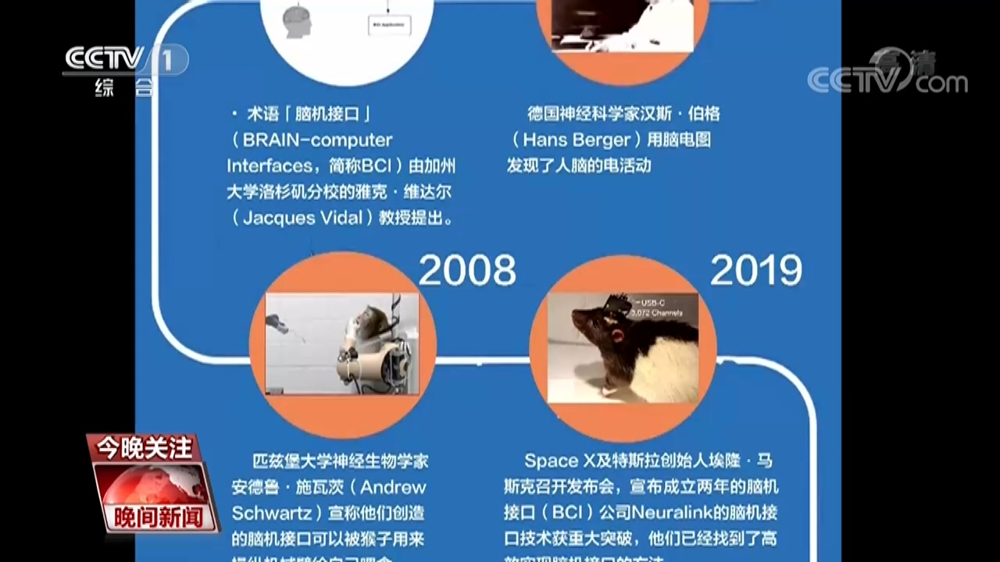
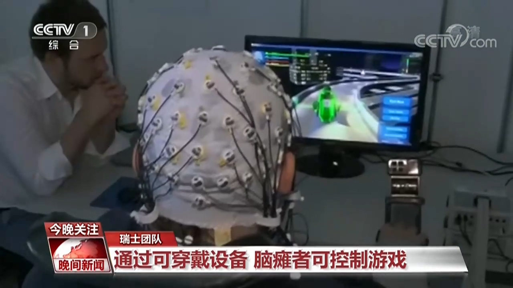
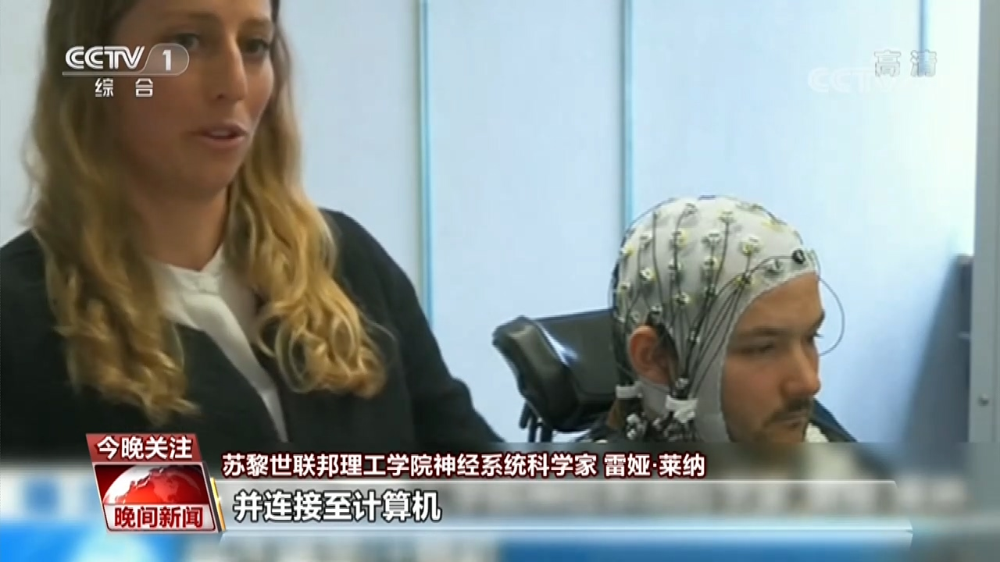
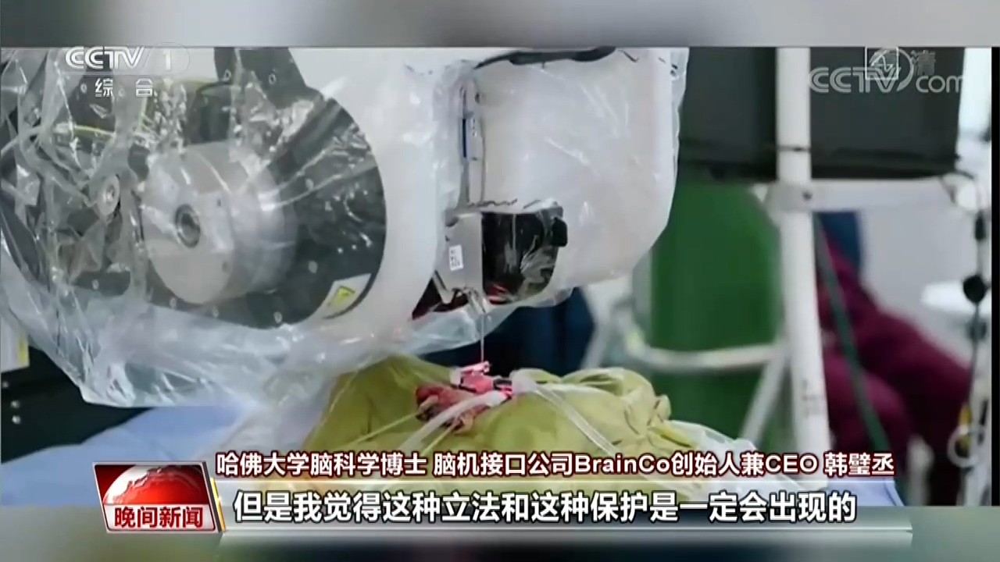

2020-08-30 01:58 央视网
北京时间8月29日凌晨，埃隆·马斯克带来他旗下脑机接口公司的最新发布，只不过这一次是先在动物身上实现的，硬币大小的芯片被植入猪脑，猪的脑部活动被展示了出来。
在马斯克的脑机接口公司举行的现场直播中，展示了一头猪的脑部在两个月前被植入了脑机接口设备。猪脑活动通过实时无线传输被展示了出来。当猪的鼻子触碰到物体时，图像上出现噪音。
被植入的这个脑机接口设备直径23毫米，厚度8毫米，大约是一枚硬币大小。拥有1024路连接，可监测上千个脑部神经元的活动。设备通过无线感应充电，可以续航一整天。最新版的设备相比之前，体积缩小了不少，需要通过手术植物人脑，人的头发下面会多一个小创口。这一技术离人体试验还有距离，目前，正在寻求美国食品与药物管理局的批准。
为什么要做脑机交互？马斯克说，他的初衷是希望帮助治疗脑功能障碍疾病，如癫痫、中风、帕金森、记忆力丧失、听觉丧失、抑郁症等。但他的最终目标是把人类智力与人工智能有效结合，提升人脑能力。
埃隆·马斯克：实际上，这个设备有很多功能，比如监测你的健康，警告你可能发生心脏病、中风或其它损伤。还有一些方便的功能，比如播放音乐。你可以做很多事情，这有点像你的手机被植入你的大脑。
“脑机交互”将如何改变我们的生活，一起了解这项技术的前世今生和未来。
总台央视记者 姜珊：“脑机交互”技术从什么时候开始出现的？目前应用得怎么样？
哈佛大学脑科学博士 脑机接口公司BrainCo创始人兼CEO 韩璧丞：其实是在1924年，德国的汉斯伯格医生第一次在人类大脑上采集到了这个信号，所以到现在2020年也将近100年的历史了。它分成两个大的方向，一个是侵入式，另一个是非侵入式。侵入式就是像埃隆·马斯克的今天发布的这样，要做一个开颅手术，然后才能够把电极藏在这个大脑里面去，来采集信号。然后另一种非侵入式其实包括脑电采集、近红外线采集以及核磁共振采集。
说到侵入式脑机交互，早在2008年，美国匹兹堡大学研究的脑机接口，就把外部设备直接接入猴脑，让猴子操纵机械臂为自己取食。而马斯克则又前进了一步。
哈佛大学脑科学博士 脑机接口公司BrainCo创始人兼CEO 韩璧丞：不用头上再戴一个很大的这种外设的设备，所以他把这个设备变小。第二个就是说他把整个手术的环节变得更加简单和方便了，它可以一个小时之内去完成这个计划，很大地降低了之前的实验时间、实验流程以及实验成本。
而说到非侵入式的脑机交互技术，来自瑞士的科学家研发出一套系统，让丧失活动能力的人也能玩电子游戏。塞缪尔是位瘫痪患者，戴上一个布满电极的头盔，通过脑电波来控制游戏。比如，想象移动左手，车会左转；反之，车会右转。
苏黎世联邦理工学院神经系统科学家 雷娅·莱纳：这些电极与一个放大器相连，并连接至计算机，最终与我们的算法相连，算法会对脑信号进行处理，并向游戏发送指令，实现对游戏的控制。
专家介绍，脑机交互的应用，简单来说，可以比喻为造人，和造超人。
哈佛大学脑科学博士 脑机接口公司BrainCo创始人兼CEO 韩璧丞：什么叫造人？有很多人有可能缺手缺脚，我们就帮他去做手和脚，然后把他的大脑和这个机器的手和脚连在一起，这样他就可以像控制自己手一样去控制那些机械臂。另一部分，就比如说有的人有老年痴呆、自闭症，有很多大脑的问题，所以我们也提供这些技术来让他恢复，让有受伤的有问题的人做成正常人。另一部分叫做造成超人，比如说我现在跟您说话，其实我的语速是受到了我的肌肉限制，那么用大脑直接交互，它又可以突破我人体本身的限制，非常快速地把我的信息传递给您。
总台央视记者 姜珊：新技术造福人类的同时，我们也担心健康风险，比如脑部损伤、排异反应这些还有待验证，同时担心网络安全，比如我脑子的隐私会不会泄露，会不会被黑客入侵？
哈佛大学脑科学博士 脑机接口公司BrainCo创始人兼CEO 韩璧丞：首先人类的大脑是我们最后的一块隐私的处女地，随着技术的延伸，它会无限地去解读、无限地去接近人们大脑想象的本源。最近有一些研究就是通过核磁共振扫描，几乎都可以扫描出大脑想象的图形。比如说我今天想象的一个西瓜，可能他一扫描就出现了一个西瓜。但是就像我们保护其他所有隐私数据一样，在未来一定会有保护大脑信息和数据的标准出现。可能来自于政府，可能来自于国际的联盟，这种立法和这种保护是一定会出现的。